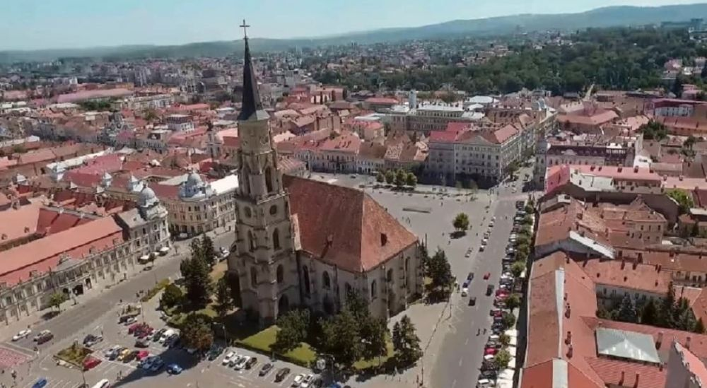

Descoperă Cluj-Napoca - O perlă culturală în inima Transilvaniei
Cluj-Napoca este un oraș vibrant și cultural, situat în inima Transilvaniei, oferind o varietate de atracții captivante pentru vizitatori:
-

Universitatea Babeș-Bolyai - Centru academic
Una dintre cele mai vechi și prestigioase universități din România, cunoscută pentru clădirile sale istorice și campusul frumos.
-

Biserica Sfântul Mihail - Bijuterie arhitecturală
O catedrală gotică impresionantă, cu turnul său înalt și istorie îndelungată.
-

Parcul Central - Relaxare în natură
Oază de verdeață în mijlocul orașului, cu alei pitorești, lacuri și spații de joacă pentru copii.
-

Muzee de artă - Aprecierea culturii
Cluj-Napoca găzduiește muzee de artă care expun opere semnificative din diverse perioade.
-

Bucătărie stradală - Delicii locale
Descoperiți mâncăruri tradiționale și moderne în piețele și străzile animate ale orașului.
Concluzii
Cluj-Napoca este un amestec de istorie, cultură și inovație, cu ceva special de oferit fiecărui vizitator.